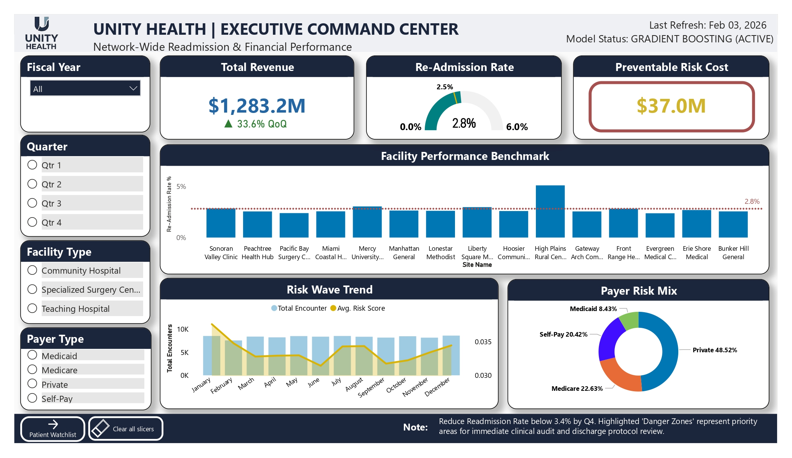
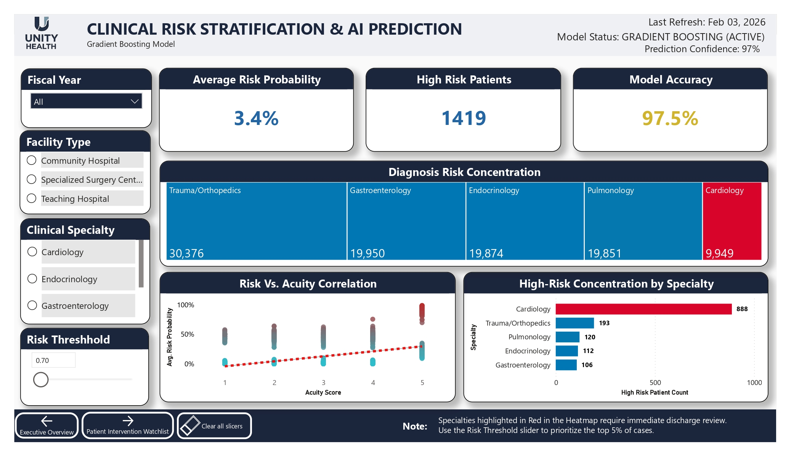
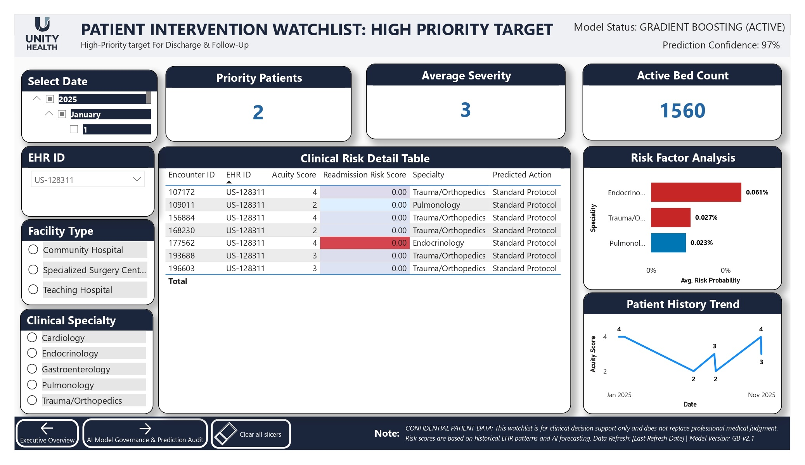
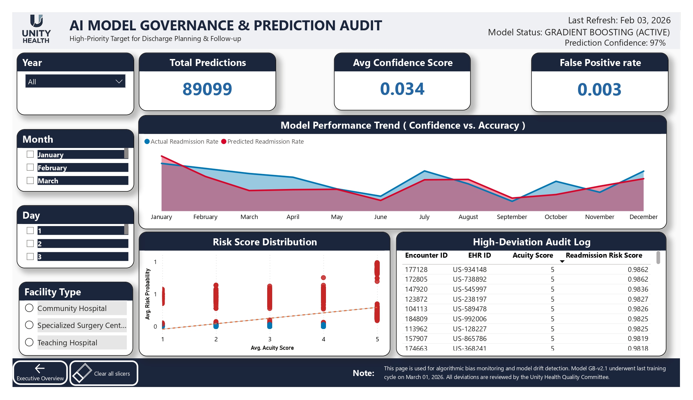

Information Silos & Clinical Chaos
Patient data remained trapped across fragmented regional Cerner EHR databases, preventing a unified network-wide view of patient risk at the point of care.
Architected an end-to-end healthcare data and machine learning platform that predicts 30-day readmission risk, prioritizes vulnerable patients, and supports prescriptive discharge interventions across a multi-site hospital network.
Unity Health Systems faced substantial clinical, operational, and financial pressure from high 30-day readmissions and CMS reimbursement penalties under the Hospital Readmissions Reduction Program.
Patient data remained trapped across fragmented regional Cerner EHR databases, preventing a unified network-wide view of patient risk at the point of care.
Different hospitals recorded identical clinical events using inconsistent structures, syntax, and descriptions, threatening predictive-model accuracy and fairness.
Case managers lacked real-time risk foresight and had to review 100% of discharges instead of targeting limited post-discharge support toward the most vulnerable patients.
An end-to-end predictive healthcare pipeline shifted the network from reactive descriptive reporting to proactive, prescriptive clinical intervention.
Azure Data Factory and a centralized Self-Hosted Integration Runtime securely extracted data from regional on-premises hospitals without exposing internal firewalls.
Azure Key Vault secured connection credentials and patient-data strings within the ingestion framework.
A reusable ADF Control Table pattern used Lookup and ForEach activities to run daily incremental loads across hospital sites.
Unified patient and encounter data was loaded into an Azure SQL analytical warehouse centered on Fact_Encounters and detailed clinical dimensions.
Local source values were normalized to ISO formats and mapped to ICD-10-CM, LOINC, and RxNorm, with Site_ID tags supporting regional comparisons.
A Scikit-Learn Gradient Boosting pipeline addressed multicollinearity, high-cardinality memory constraints, and missing clinical values through medical median imputation.
A four-page Power BI suite linked serialized model risk probabilities back to the warehouse for financial tracking, specialty risk mapping, patient prioritization, and governance auditing.
The platform uncovered major network savings opportunities by accurately identifying patients inside the readmission penalization window.
The Gradient Boosting champion model achieved approximately 97.5% predictive confidence.
Clinical teams could replace a 100% discharge-review model with focused intervention for patients whose AI risk scores exceeded 80%.
Acuity Score accounted for 47.7% of model importance, while Heart Failure diagnoses contributed 16.7%.
Machine-learning flags gave discharge planners clear guidance such as “Immediate Intervention” and “Enhanced Discharge” before patients left the hospital.
The architecture securely unifies regional EHR data, standardizes clinical terminology, generates risk predictions, and delivers intervention-ready intelligence.
Regional EHR patient, encounter, and clinical-event data
ISO, ICD-10-CM, LOINC, RxNorm, and Site_ID mapping
Azure SQL star schema and daily incremental loads
Gradient Boosting readmission-risk model
Prioritized patient watchlists and predicted actions
A metadata-driven workflow converts fragmented regional data into actionable pre-discharge risk guidance.




Replace this placeholder with the public Power BI embed URL after publishing the report.
The repository contains project documentation, pipeline details, machine-learning implementation context, screenshots, and supporting assets.
Discover more healthcare analytics and enterprise data transformation projects.